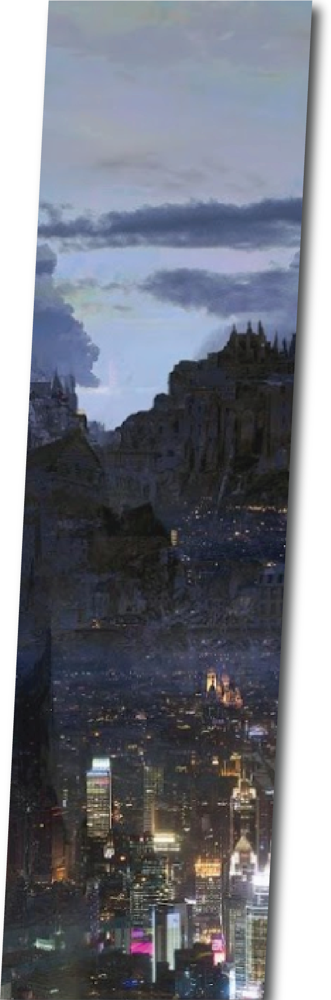
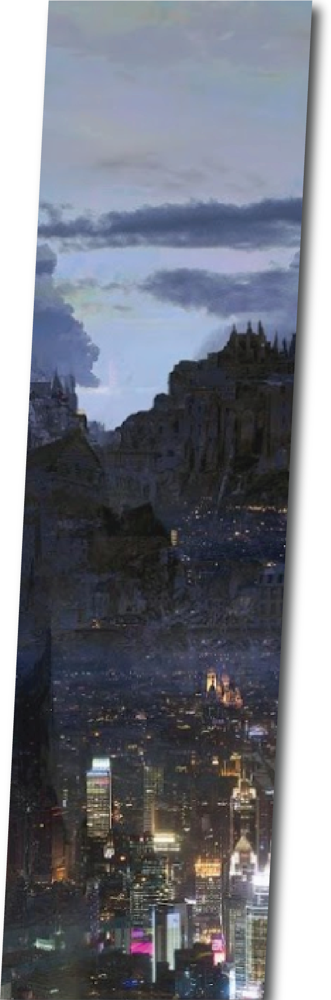

The mist rose slowly that morning, the river that surrounded the settlement of the Dashe tribe seemed to cling to it as
the sun rose on the horizon. The people of the tribe began their activities like every morning and the voices of the
villagers began to accompany the sounds of nature that rose with chirps of birds in the treetops and the stream of the
river that swirled on the rocks near the coast
Tabitha, the tribe's spiritual leader, leaned out of her shack window, taking deep breaths of the morning aromas. The
vegetation that surrounded the main houses of the village was plagued with her herbs and flowers, so the aroma of
the morning breeze had a special smell, a scent of home.
From the window, she watched quietly as the morning activities of the village unfolded. The old woman's eyes, gray as
a stormy sky, had begun to cloud over the years. She smiled internally at the metaphor they represented; the visions
her Animastone provided had begun to cloud as well, she had been noticing it for years when her visions with newborn
Dashe children came to her in a blurry and messy way. Tabitha gave a snort heading to the door, she wouldn't let
something as small as age get in between her and everything she built, her legacy or the future of her bloodline.
Down the steps and through her vegetable garden, Tabitha left her house for the weekly council meeting. She heard in
the distance the bustle in the small wooden pier that was in the middle of busy tasks. Every morning, the fishermen
accommodated their nets on the barges, loaded harpoons, ropes and hoisted the small sails that would take them
upstream. She smiled, most people in the village didn’t suspect the deterioration of her powers, if they found out she
wouldn't hold her position anymore, her life’s work gone, but particularly she refused to lose power. She resumed down
the jagged street, happy voices of the children who ran around between their parents caught her attention, they said
goodbye for the day, before going to perform gem training and study tasks. Tasks she designed for her Dashe to
flourish with their natural abilities. Her smile subsided, she knew that some members had begun to look at her
differently, their Animastone’s subconsciously reacting to Tabitha’s ability slowly fading away.
A little further north, near the entrance to the territory of the village, the merchants were preparing to receive the
caravan that toured all the Urakesh forest tribes exchanging their merchandise. The skins brought were very precious,
especially in the winter season when the good dry firewood was difficult to obtain; since the Dashe tribe lost their best
hunter, the skins and salted meats became highly desired in their deposits. Tabitha stopped to curse her aching body
for already being out of breath. She cursed one last time, as the smell of fish enveloped her face, she stood next to all
the river seafood being carried up to the wagon. She followed the containers with her gaze, all the excess food was
used to exchange for fresh fruits and vegetables that the caravan brought from the southern tribes where there was
better land for harvest. Tabitha squinted as her sight set on the woman standing next to cart negotiating the trade.
The exchange network had been achieved thanks to the communicational powers of Iriath, second most powerful
and respected woman in the village. Tabitha suspected that Iriath was one of those who questioned her visions, ever
since her power reacted so violently to holding Iriath’s newborn daughter. She had never said it openly or raised the
matter in front of the council but the old woman could feel it in her bones. The spiritual leader suspected that Iraiath
was zealous, thirsty for power and her place in the council. It had happened so many years ago, yet the memory of
red-eyes sent a chill down her spine culminating with her hands shaking. She looked up immediately from her hands,
the two women's eyes met, and Iriath gave a polite wave. She smiled back but the animosity between them was
palpable.
Reinvigorated with disdain, Tabitha resumed walking, she had tried everything to undermine that usurper. She
managed to tribute Iriath’s husband to the Fremerian army splitting their Animastone bond, and while down, she
secretly encouraged a mob to run her two children into the Urakesh Forest. Tabitha spat on the ground. Nothing
worked, If anything her life became worse, the village endured Iriath nightly bedtime terrors, her broken anima
mourning her loss at the top of her lungs. Still, for years now, that wretched woman pranced through the village
looking refreshed and eager develop the Urakesh tribe exchange.
Soon, the old woman thought, she continued down to the hut where the council would meet that day, you will soon
respect me and fear me as before.
A group of children ran past the steps of the main village lodge. It was a strong wooden construction, the largest of
them all, located almost in the center of the settlement, a watchtower stood on one side, making it the tallest structure
within the Dashe buildings. The children stopped for a few seconds to greet the old woman with cheerful voices, she
nodded slightly and continued on her way, barely noticing the presence of the little ones, their Animastones were now
barely noticeable for her powers.
"Good morning, mama," Kreto greeted from the entrance to the council room. "You came early this morning." Precious
metals from the mountain tribes adorned his chest in an elaborate pendant.
"Today will be a great day, son," replied the old woman entering the hut.
He scoffed "Not that great, Did you talk to the builders?" his voice sounding more like a child than the leader of the
Dashe.
“None of that will matter, love, today will be a new beginning” she trailed off her mind lost inside their future.
"I am the reason why the village is safe” He resumed “mama! No one else! I deserve to have a home that lives up to my
investiture and away from that annoying banshee!"
Tabitha looked at her son. The man looked at her from above, with all his humanity towering over her, he was an
impressive figure. But not for her.
Tabitha was about to answer him when a few men running outside called her attention. A sharp and torn scream was
heard in the distance, then silence fell over the village like a dark and ominous mantle. The calm lasted just a few
minutes before pandemonium broke out in the village. Kreto ran out of the room.
The woman moved as quickly as her old body allowed. The sight she received when leaving the hut was complete
chaos. But the only thought that crossed her mind was one crippling truth, this was not the plan.
She had given them the location of the village to barter some unimportant children in the village for the potion that
would clarify her visions and restore her powers. The warriors had arrived by the river as they had agreed, but instead
of skins and goods, they came brandishing swords and heavy axes. The cries of the villagers mixed with laments of
pain and despair, the invaders were not leaving any adults alive.
“This was not the plan” Tabitha continued to whisper becoming her mantra, she stood helpless in the pandemonium.
She saw the invaders set fire to the village, without mercy, without regrets, they decimated the bulk of the villagers. Her
legs, weak, gave in and she dropped to the ground, her gaze fixed on the desecration. Dashe corpses were lined up,
their Animastones torn from their chest and replaced with a squirming egg sack. Screams of children covered the air,
the familiar scents now turned into smoke and blood.
Tabitha had lost sight of Kreto between the tumult and despair that reigned in the village, but she feared that her son
had not survived. The warriors, who now lined a fearsome wall in front of her, opened, giving way to a slender woman.
Tabitha knew her, she was the connection who had promised her the potion, but she didn't look exactly as she had
known her, she looked much younger.
“Your visions are not the only thing that has weakened over the years, old friend”
The woman approached her and raised her right hand, a gauntlet with three metal claws that protruded from it
caressed the face of the old woman who was looking at it with eyes full of terror.
“Time for you and the...” she snickered “The children to meet our chief”
Tabitha had made a very serious mistake.
And now her entire tribe had paid for it.

 
